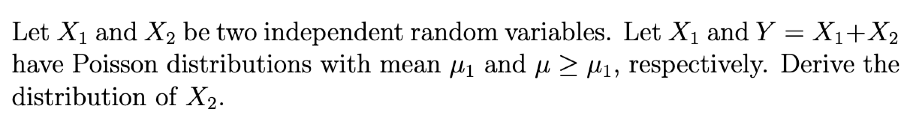

hw6
Question 1
(a) Answer:
\(Z_i=\frac{X_i-i}{\sqrt{i^2}}=\frac{X_i-i}{i}\) for i = 1, 2, 3
\(Z_i\sim N(0,1)\)
\(\sum_{i=1}^{3}(\frac{X_i-i}{i})^2 \sim \chi^2(3)\)
(b) Answer:
\(\sum_{i=1}^{2}(\frac{X_i-i}{i})^2\sim \chi^2(2)\)
By independence of \(X_1\), \(X_2\), and \(X_3\),
\(\frac{X_1-1}{\sqrt{\sum_{i=2}^{3}(\frac{X_i-i}{i})^2/2}}\sim t_2\)
(c) Answer:
\((X_1-1)^2\sim \chi^2(1)\)
\(\frac{\chi^2(1)/1}{\chi^2(2)/2}\sim F_{1,2}\)
By independence of \(X_1\), \(X_2\), and \(X_3\),
\(\frac{(X_1-1)^2}{\sum_{i=2}^{3}(\frac{X_i-i}{i})^2/2}\sim F_{1,2}\)
Question 2
Answer:
By independence of X and Y,
\(M_W(t)=M_{X^2+2Y^2}(t)=E[e^{X^2t+2Y^2t}]=E[e^{X^2t}]E[e^{2Y^2t}]=M_{X^2}(t)M_{Y^2}(2t)\)
Since X and Y are iid normal(0,1)
\(X^2 \sim \chi^2(1)\)
\(Y^2 \sim \chi^2(1)\)
\(M_{X^2}(t)=\frac{1}{(1-2t)^{1/2}}\), t<1/2
\(M_{Y^2}(2t)=\frac{1}{(1-4t)^{1/2}}\), t<1/4
\(M_W(t)=M_{X^2}(t)M_{Y^2}(2t)=\frac{1}{(1-2t)^{1/2}}\frac{1}{(1-4t)^{1/2}}\), t<1/4
Since it is not in the shape of the MGF of chisquare distribution, we can conclude that W does not follow a chisquare distribution.
Question 3

Answer:
\(M_Y(t)=E[e^{X_1t+X^2t}]=M_{X_1}(t)M_{X^2}(t)\)
\(M_{X_2}(t)=\frac{M_Y(t)}{M_{X_1}(t)}\)
Since \(Y \sim Poisson(\mu)\) and \(X_1 \sim Poisson(\mu_1)\),
\(M_Y(t)=e^{\mu(e^t-1)}\) \(\forall t\)
\(M_{X_1}(t)=e^{\mu_1(e^t-1)}\) \(\forall t\)
\(M_{X_2}(t)=\frac{M_Y(t)}{M_{X_1}(t)}=e^{\mu(e^t-1)-\mu_1(e^t-1)}=e^{(\mu-\mu_1)(e^t-1)}\) \(\forall t\)
Therefore, \(X_2 \sim Poisson(\mu-\mu_1)\)
Question 4
(a) Answer:
Since \(\sum r^x=\frac{1}{1-r}\) for |r| < 1,
\(M_X(t)=E[e^{tX}]=\sum_{x=0}^{\infty}e^{tx}p(1-p)^x = p\sum_{x=0}^{\infty}e^{tx}(1-p)^x=p\sum_{x=0}^{\infty}(e^{t}(1-p))^x=\frac{p}{1-e^{t}(1-p)}\)
To find the bound of t,
\(|e^{t}(1-p)|<1 \Rightarrow e^{t}(1-p)<1\Rightarrow t+log(1-p)<0\Rightarrow t<-log(1-p)\)
(b) Answer:
Let \(\psi_X(t)=logM_X(t)=log(p)-log(1-e^t(1-p))\)
\(\mu_X=\psi_X'(t)\Big|_{t=0}=\frac{e^t(1-p)}{1-e^t(1-p)}\Big|_{t=0}=\frac{1-p}{p}\)
\(\sigma^2_X=\psi_X''(t)\Big|_{t=0}=\frac{(1-p)e^t\{1-(1-p)e^t\}+(1-p)^2e^{2t}}{\{1-e^t(1-p\}^2}\Big|_{t=0}=\frac{(1-p)p+(1-p)^2}{p^2}=\frac{1-p}{p^2}\)
(c) Answer:
By central limit theorem:
\(\frac{\sqrt{n}(\bar{X}-\mu_x)}{\sigma_x}\sim N(0,1)\)
\(E[\sqrt{n}(\bar{X}-\mu_x)]=0\)
\(Var[\sqrt{n}(\bar{X}-\mu_x)]=\sigma^2_x\)
\(\sqrt{n}(\bar{X}-\mu_x)\sim N(0,\sigma^2_x)\)
Question 5
Answer:
\(E[e^{Y_1Y_2t}]=E_{Y_2}\{E[e^{Y_1Y_2t}|Y_2]\}\)
Let \(Y_2=y_2\)
\(E[e^{Y_1Y_2t}|Y_2=y_2]=E[e^{Y_1y_2t}|Y_2=y_2]=E[e^{Y_1y_2t}]=M_{Y_1}(y_2t)\)
Since \(Y_1\sim N(0,1)\)
\(M_{Y_1}(y_2t)=e^{\frac{1}{2}y_2^2t^2}\) where \(-\infty<t<\infty\)
Replace \(y_2\) with \(Y_2\)
\(E_{Y_2}[e^{\frac{1}{2}Y_2^2t^2}]=M_{Y_2^2}(\frac{1}{2}t^2)\)
Since \(Y_2\sim N(0,1)\), we have \(Y_2^2\sim \chi^2(1)\)
\(M_{Y_2^2}(\frac{1}{2}t^2)=\frac{1}{(1-2\frac{1}{2}t^2)^{1/2}}=\frac{1}{(1-t^2)^{1/2}}\)
The support of t can be found below:
\(\frac{t^2}{2} <\frac{1}{2}\Rightarrow -1<t<1\)
\(M_Y(t)=\frac{1}{(1-t^2)^{1/2}}\)
Question 6
(a) Answer:
\(Y=e^X\Rightarrow logY=X\)
\(\infty < X < \infty \Rightarrow 0 < Y < \infty\)
\(f_{X}(x)=\frac{1}{\sqrt{2\pi}\sigma}e^{-\frac{(x-\mu)^2}{2\sigma^2}}\) with support: \(-\infty<x<\infty\)
\(|\frac{dx}{dy}|=|\frac{dlogy}{dy}|=|\frac{1}{y}|=\frac{1}{y}\)
\(f_Y(y)=f_X(logy)|\frac{dx}{dy}|=\frac{1}{\sqrt{2\pi}\sigma}e^{-\frac{(log(y)-\mu)^2}{2\sigma^2}}\frac{1}{y}\) with support: \(0<y<\infty\)
(b) Answer:
\(E[Y^k]=E[e^{Xk}]=M_X{(k)}=e^{k\mu+\frac{k^2\sigma^2}{2}}\) for all k